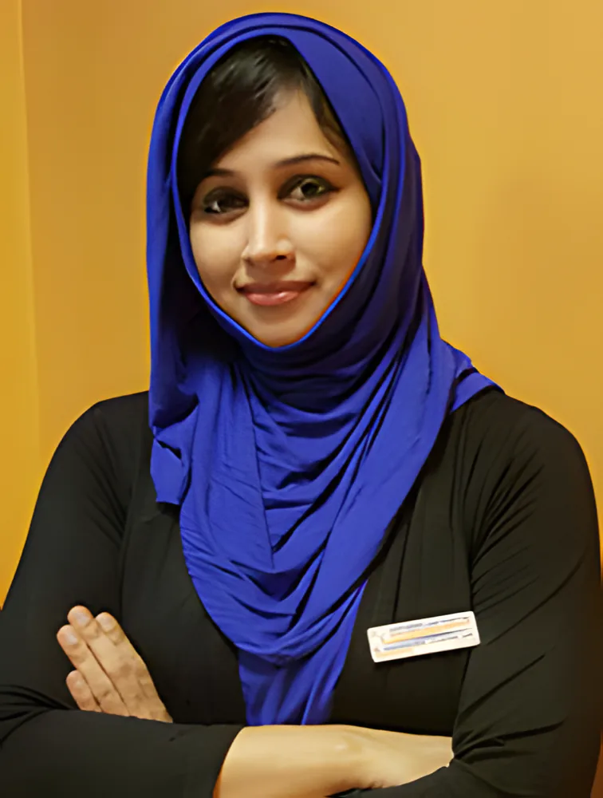
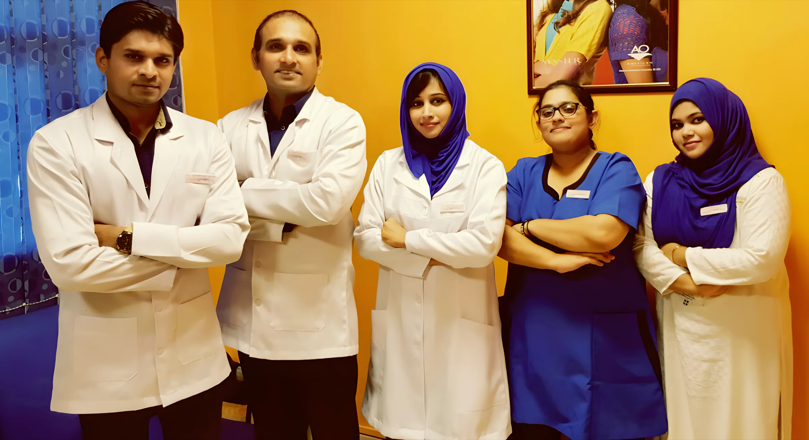

Dr. Hafsa Banu Abid
Managing director, general and aesthetic dentistry
Bachelor of Dental Surgery, Yenepoya Dental College, India (2003). Founded White Smile in 2010.
Opposite Qurum Natural Park, Muscat
Way 1829, Building 2021, ground floor · Parking reserved for our patients
Dental Speciality, Qurumعيادة الابتسامة البيضاء التخصصية للأسنان
Dr. Hafsa Banu Abid opened this clinic in 2010, opposite Qurum Natural Park. Check-ups, fillings and root canals, crowns, veneers and whitening, implants, gum treatment and braces, all in one place.
Open nowSun–Thu 8:30–12:30 and 4:30–8:30 · Sat evenings


Many patients come to us with a fear of the dental clinic and of treatment. We work through it by talking with you and explaining your teeth and how to care for them, so you know what is happening at every step. The waiting room is calm, and there is parking reserved for our patients.
“I was too afraid and scared, since it is my first time I was getting my teeth cleaned professionally, but with Dr Hafsa, I really thank my god and her for making it very professionally without causing any pain and damage.”Mr. Abdullah, Omani patient

General and cosmetic dentistry with Dr. Hafsa, and braces with our specialist orthodontist. Tap a treatment to see what it covers.

Most dental problems are painless at first, so a regular check-up finds them before they do damage.
Dr. Hafsa is certified in Lumineers and Cerinate smile designs.
With Prof. Dr. Sandeep Shetty, specialist orthodontist. Easy instalment options are available for braces.
A laser can remove or shape tissue with a narrow beam of light. In some procedures it means no drill and no anaesthetic, less bleeding and a quicker recovery.
An implant replaces the root of a missing tooth. After surgery we see you for check-ups until it has healed, usually over one to four months.


Managing director, general and aesthetic dentistry
Bachelor of Dental Surgery, Yenepoya Dental College, India (2003). Founded White Smile in 2010.

Specialist orthodontist
MDS in Orthodontics and Dentofacial Orthopedics. Certified in Incognito lingual braces.
With Shiny Thomas, dental nurse and treatment coordinator, and Nahida Ibrahim, patient relations officer.
Meet the teamFrom the testimonials page of our website.
Dr Hafsa, I like her patience, very informative and thoroughly talks you through the treatment. You feel at ease!
Dr Hafsa has a hand that works like a lapidiary (diamond cutter) … The staff and attendants were very courteous and professional.
The clinic is high tech, I am impressed with the equipment. Dr Hafsa is very thorough with her work, checks each tooth. Great work.
… She treated the problem with patience and in a professional manner, not in a commercial basis.
I have to say that the dentist is the best, me and my wife has visited and I would recommend her any day for any dental procedure.
Way 1829, Building 2021, ground floor, Qurum, Muscat
Opposite Qurum Natural Park. Parking is reserved for our patients.
Open now
| Sunday | 8:30am – 12:30pm4:30pm – 8:30pm |
|---|---|
| Monday | 8:30am – 12:30pm4:30pm – 8:30pm |
| Tuesday | 8:30am – 12:30pm4:30pm – 8:30pm |
| Wednesday | 8:30am – 12:30pm4:30pm – 8:30pm |
| Thursday | 8:30am – 12:30pm4:30pm – 8:30pm |
| Friday | Closed |
| Saturday | 4:30pm – 8:30pm |
Opposite Qurum Natural Park